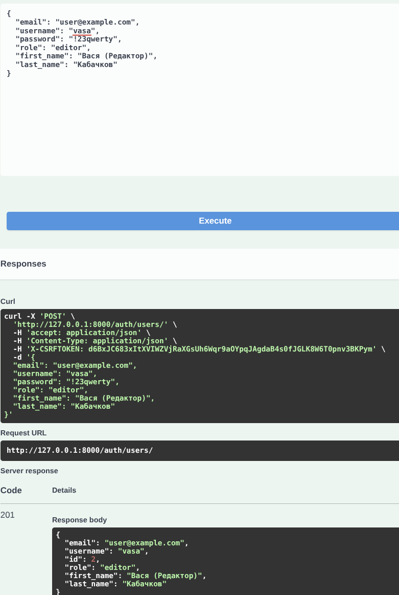
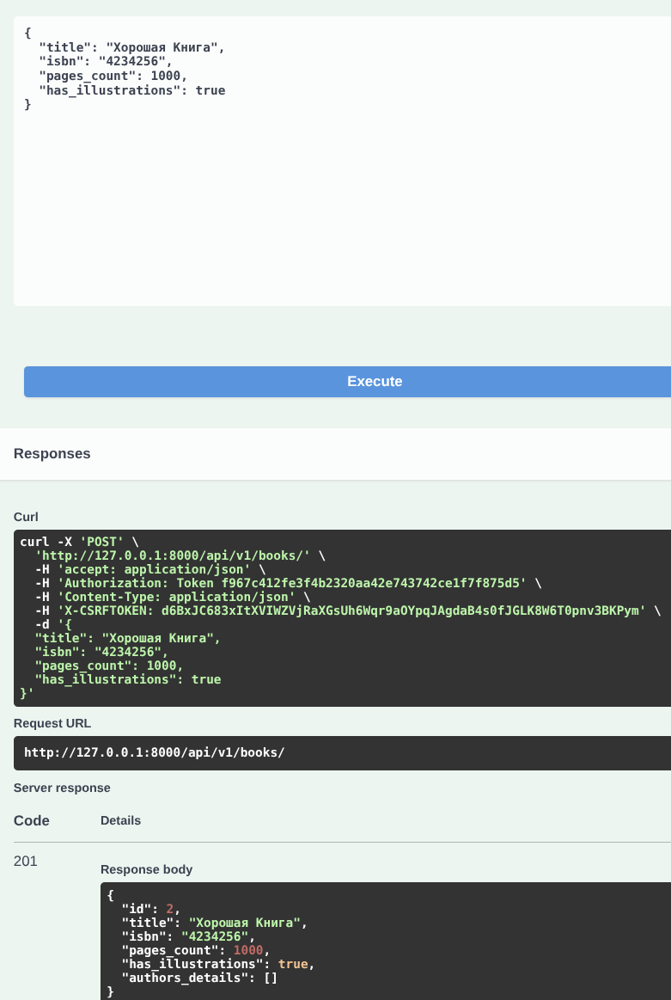
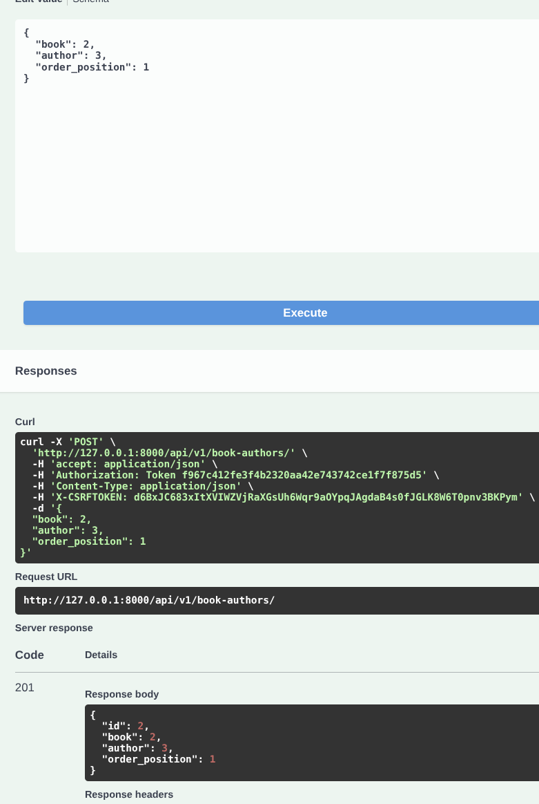
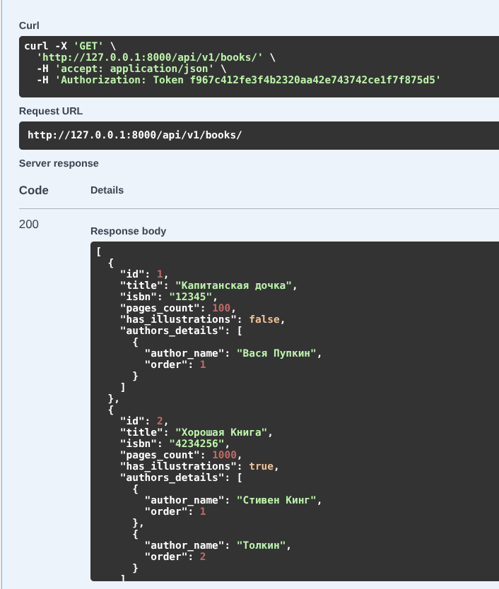
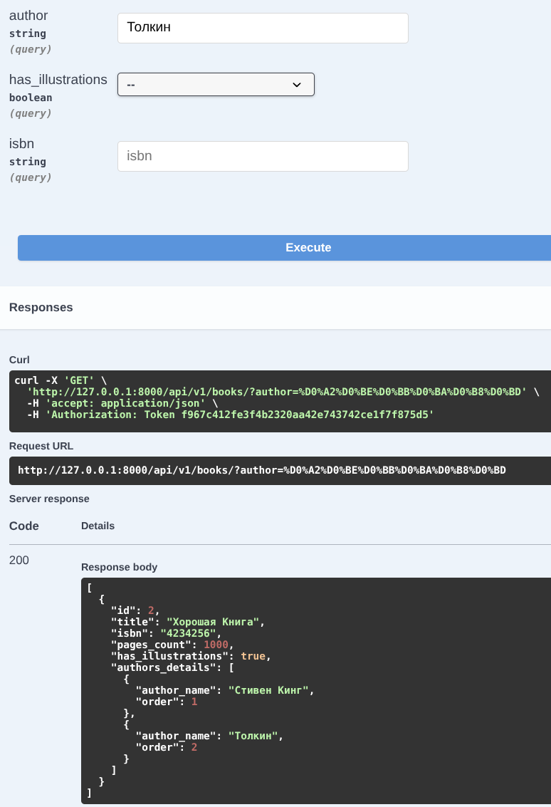
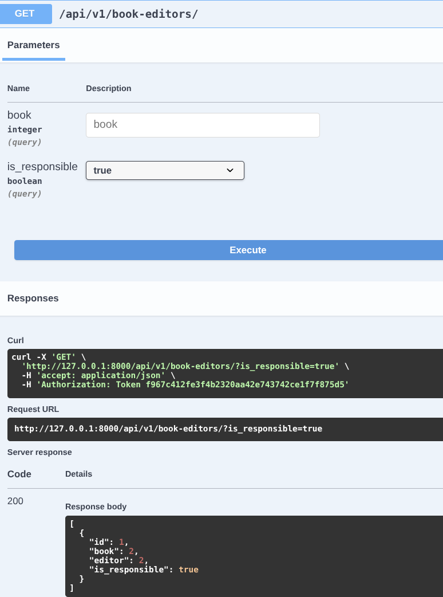
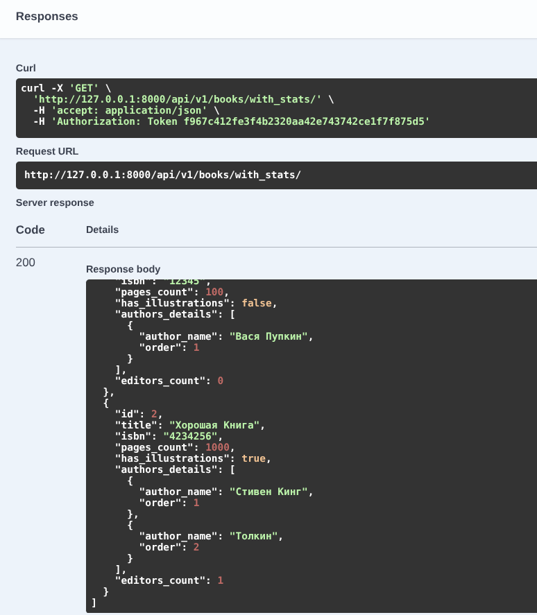
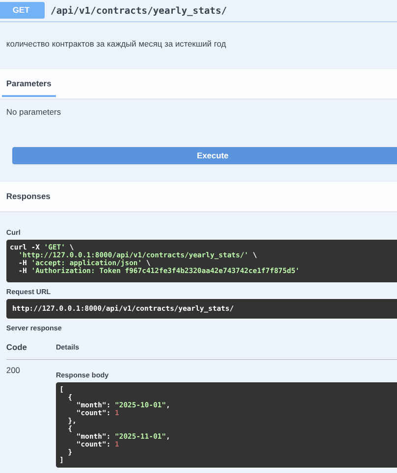
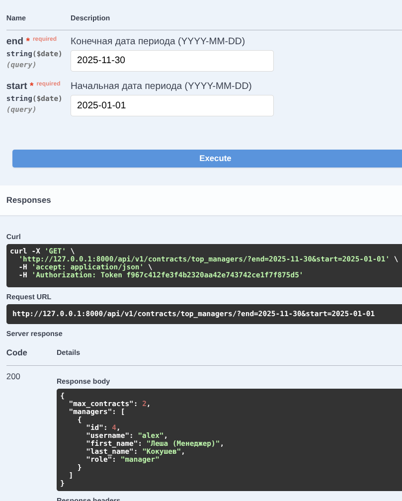
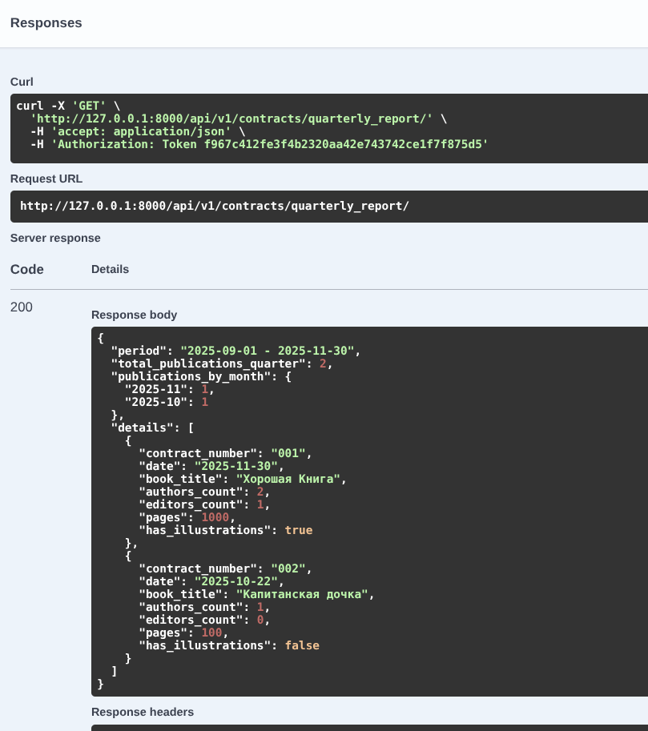

API для типографии
Цель работы
Овладеть практическими навыками проектирования и реализации REST API с использованием фреймворка Django REST Framework. Научиться моделировать сложные связи в базе данных, реализовывать авторизацию по токенам и создавать агрегированные отчеты средствами ORM.
Постановка задачи
Необходимо разработать программную систему для обслуживания сотрудников типографии.
Ключевые требования:
- Ролевая модель: Разделение на менеджеров и редакторов.
- Сложные связи:
- У книги несколько авторов, важен их порядок.
- У книги несколько редакторов, один из них - ответственный.
- Контракты подписываются менеджерами.
- Функциональность: CRUD операции для всех сущностей, авторизация, специальные отчеты
- Документация: Автоматическая генерация документации API.
Ход работы
Проектирование и реализация базы данных (Django ORM)
Первым этапом я проанализировал предметную область. Самой сложной частью оказалось реализация связей Многие-ко-Многим
с дополнительными условиями. Стандартный ManyToManyField не подходил, так как нужно было хранить порядок авторов и
флаг ответственности редактора.
Я решил эту проблему через использование промежуточных моделей (аргумент through).
Реализованная схема БД:
- User: Кастомная модель пользователя, наследуемая от
AbstractUser. Добавлено полеrole(Manager/Editor). - Book: Основная сущность.
- Author: Справочник авторов.
- Contract: Связан с Книгой (OneToOne) и Менеджером.
- Order: Заказ от клиента.
- BookAuthor (Промежуточная): Связывает Книгу и Автора, содержит поле
order_position(порядок на обложке). - BookEditor (Промежуточная): Связывает Книгу и Редактора, содержит булево поле
is_responsible.
Пример реализации модели Книги с промежуточными связями:
class Book(models.Model):
# ... поля title, isbn ...
authors = models.ManyToManyField(Author, through='BookAuthor')
editors = models.ManyToManyField(settings.AUTH_USER_MODEL, through='BookEditor')
Настройка Админ панели
Для удобного наполнения базы данных я настроил admin.py, используя TabularInline. Это позволило добавлять авторов и
назначать редакторов прямо на странице редактирования книги, а не создавать связи в отдельных окнах. Это значительно
ускорило процесс тестирования.
Реализация логики API
Для сериализации данных я использовал ModelSerializer.
В сериализаторах возникла необходимость выводить не просто ID связанных объектов, а их детальную информацию.
- Решение: Использовал
SerializerMethodFieldдля поляauthors_detailsвBookSerializer, чтобы API возвращал список авторов сразу с их порядковыми номерами.
Для обработки запросов использовал ModelViewSet. Это позволило сократить код, так как базовые методы (GET, POST, PUT,
DELETE) создаются автоматически.
Реализация аналитических отчетов
Это была наиболее трудоемкая часть работы. Требовалось не просто выводить данные, а агрегировать их, считать суммы, группировать по датам.
Использованные инструменты:
@action: Декоратор для создания кастомных эндпоинтов внутри ViewSet.annotateиCount: Для подсчета количества редакторов и контрактов.TruncMonth: Для группировки статистики по месяцам.
Пример логики для поиска лучших менеджеров:
Я реализовал эндпоинт top_managers, который принимает даты периода. Логика следующая: фильтруем контракты по дате ->
группируем по менеджеру -> считаем количество -> сортируем по убыванию.
# Фрагмент кода из ContractViewSet
stats = Contract.objects.filter(date_signed__range=[start, end])
.values('manager')
.annotate(total_contracts=Count('id'))
.order_by('-total_contracts')
Аутентификация и безопасность
Для реализации регистрации и входа в систему была подключена библиотека Djoser.
- Настроены эндпоинты
/auth/token/login/для получения токена. - В
settings.pyустановлен класс аутентификацииTokenAuthentication. - Права доступа: Все методы API закрыты пермишеном
IsAuthenticated.
Результаты работы
Тестирование управления данными (CRUD и связи)
Тест: Создание книги с несколькими авторами.
Результат: Система корректно сохраняет порядковый номер автора. При GET запросе книги авторы выводятся в строгом соответствии с заданным порядком.

Создание редактораСоздание менеджера

Создание книги
Добавление первого автораДобавление второго автора

Просмотр книги с авторамиТестирование системы отчетности
Для проверки аналитических функций база данных была наполнена тестовыми контрактами, подписанными в разные месяцы текущего и прошлого квартала.
- Отчет: Книги заданного автора
Запрос: GET /api/v1/books/?author=Толстой
Результат: Реализована фильтрация через Query Parameters. Сервер возвращает JSON список книг только указанного автора.

- Отчет: Ответственные редакторы
Запрос: GET /api/v1/book-editors/?is_responsible=true
Результат: Получен список всех назначений, где редактор имеет статус ответственного. Записи с обычными редакторами отфильтрованы.

- Отчет: Статистика по редакторам (Aggregation)
Запрос: GET /api/v1/books/with_stats/
Результат: Средствами ORM (annotate) к каждой книге добавлено вычисляемое поле editors_count. Данные совпадают с фактическим количеством записей в БД.

- Отчет: Динамика контрактов за год
Запрос: GET /api/v1/contracts/yearly_stats/
Результат: Система выполнила группировку записей по месяцам. В ответе получен массив объектов вида {" month": "2023-10-01", "count": 5}, отражающий активность заключения контрактов.

- Отчет: Эффективность менеджеров
Запрос: GET /api/v1/contracts/top_managers/?start=...&end=...
Результат: При передаче временного периода система корректно определила менеджера с максимальным числом подписанных контрактов и вернула его данные.

- Комплексный отчет за квартал
Запрос: GET /api/v1/contracts/quarterly_report/
Результат: Сформирован JSON документ сложной структуры.
В блоке details для каждого контракта выведены: название книги, количество авторов, количество редакторов, объем в страницах.
В блоке publications_by_month подсчитано количество изданий за каждый месяц квартала.
В блоке total выведена итоговая сумма за квартал.

Выводы
В ходе выполнения лабораторной работы я разработал backend приложение для типографии.
- Разобрался, как работают связи
Many-to-Manyс дополнительными полями в Django и как их правильно сериализовать. - Научился использовать
aggregationsиannotationsв Django ORM для построения сложной аналитики без нагрузки на интерпретатор Python. - Освоил библиотеку Djoser для быстрой настройки системы аутентификации.
- Понял принцип работы ViewSets и Routers, что позволяет писать лаконичный и поддерживаемый код.